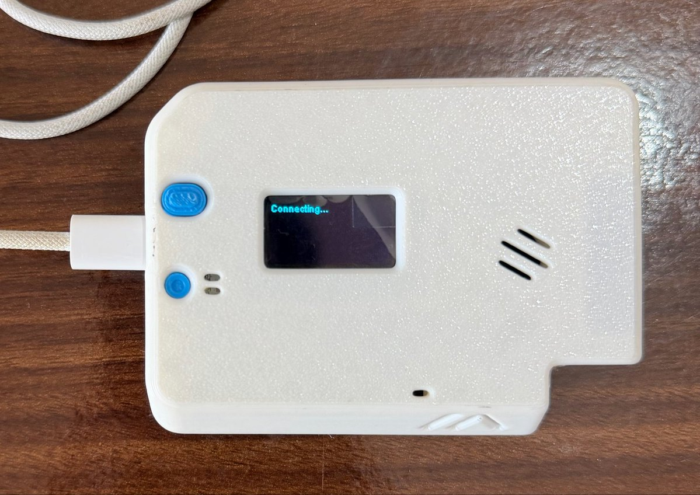
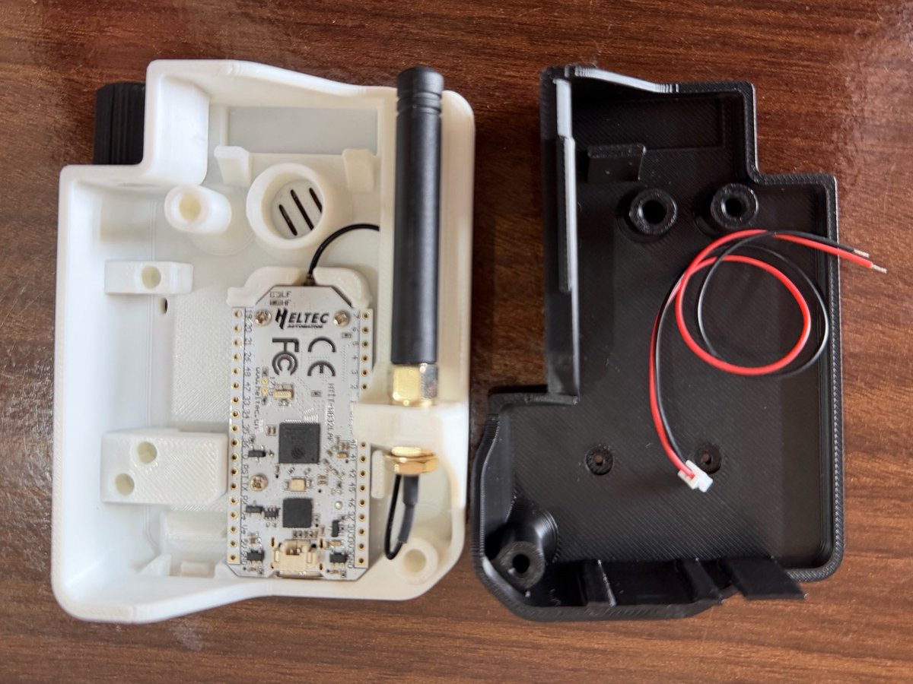
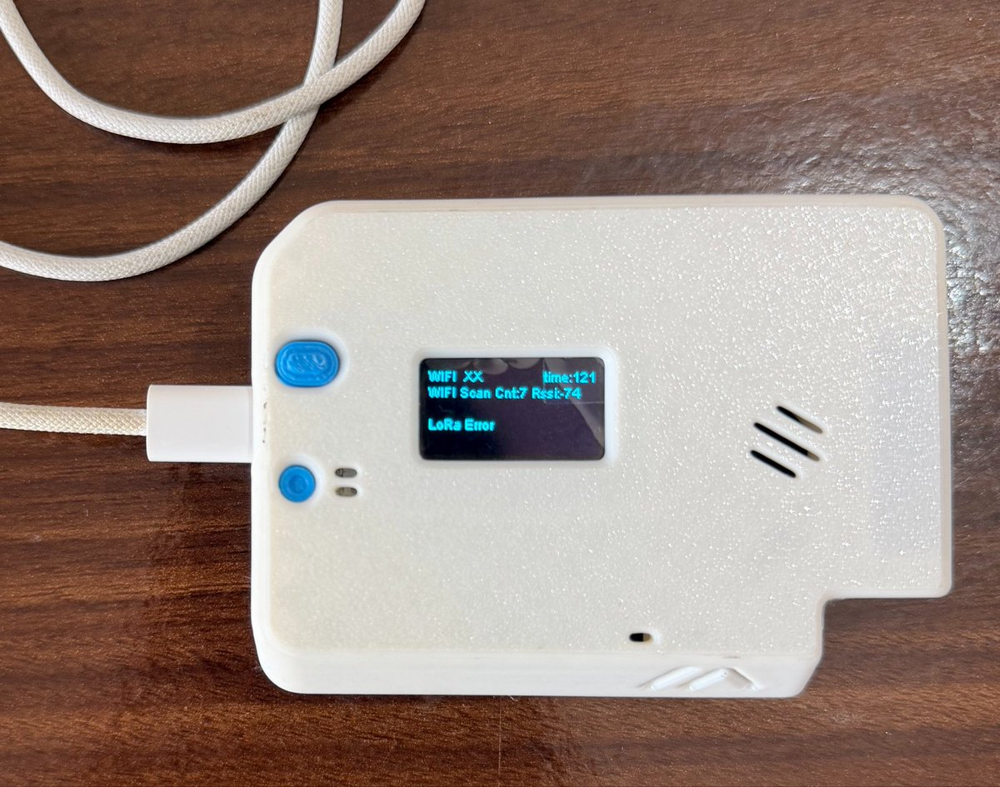

Situational awareness, privately yours
Protect the self.
Perceive the world.
A private instrument for the space around you. An Android app, with a pocket Edge companion, that shows what nearby electronics are broadcasting, remembers what you have encountered before, and adds airspace and orbital context.
Local-first/Evidence-first/Receive-only
- Sensed
- Network
- Predicted
01The visibility gap
The world is increasingly instrumented. The individual still lacks a dashboard for it.
Surveillance no longer has a single shape. The space around you is electronically dense, and hard to read.
Senses. Logs. Correlates.
Usually has no comparable view.
The problem is asymmetry. Sotreus closes part of that gap: honestly, and only with what your devices can legitimately observe.
02How it works
Walk into any space. Get five answers.
Your Android phone is the first sensor. Sotreus observes nearby Bluetooth LE and visible Wi-Fi, learns what is normal for a place, and keeps the evidence on your device.
A scanner answers one question: what is nearby right now. Sotreus answers the next four, because it remembers.
- 01
What is here?
How many radios and device families are visible right now.
- 02
What is familiar?
What matches this place, or devices you have tagged as yours or expected.
- 03
What changed?
What is new, unusually persistent, or different from your previous visits.
- 04
What have I seen before?
Which tagged or fingerprinted entities have appeared somewhere else.
- 05
What is around or above me?
Nearby aircraft, drone Remote ID broadcasts and satellite passes, when you turn context on.
DemoThe Android app, live today
Sotreus, on a real phone.
- Place A live session: radios observed here, against this place's baseline
- Encounters New, familiar, persistent, re-encountered
- Context Aircraft, Remote ID and satellite passes, each with its source
- History Sessions and places, kept on the device
- Settings Retention, location precision, opt-in feeds
Click the video, or press P, to play and pause.
03Encounter memory
A scanner shows you a list. Sotreus remembers.
Familiar
Matches this place's baseline, or a device you marked as yours or expected.
New
Not seen in this place before. Most new things are ordinary; Sotreus simply notes them.
Persistent
Present for an unusually long stretch of a session, rather than passing through.
Re-encountered
A distinctive fingerprint seen again in a different, unrelated place.
| Other apps say | Sotreus says |
|---|---|
| Needs attention | |
| Camera-family signature observed | |
| Repeated cross-location re-encounter observed |
An explainable attention score, not a threat score. You decide what the evidence means.
04Context fusion
Look around. Then look up.
SENSEDDrone Remote ID
Observed directly by your phone or Sotreus Edge: BLE, Wi-Fi and compatible Remote ID broadcasts.
- Drone altitude
- 74 m
- Horizontal distance
- 312 m
- Last message
- 1.2 s ago
NETWORKAircraft / ADS-B
Reported by an external provider over the internet. Always shown with its source and data age.
- Aircraft nearby
- 8
- Closest
- 6.2 km
- Data freshness
- 4 s
PREDICTEDSatellite passes
Computed on your device from public orbital elements. Your location never leaves the phone.
- Pass begins → ends
- 22:07 → 22:14
- Max elevation
- 61°
- Orbit data age
- 3 h 18 m
- New BLE fingerprint observed
- Tagged device re-encountered
- Aircraft passed within the selected radius
- Satellite pass overlapped this session
One timeline, three kinds of source. Sotreus may say events overlapped in time. It never says one caused the other.
Example values, as shown on sotreus.com.
05Privacy + trust
Privacy is architecture, not a setting.
No account required
Scanning, memory, tagging and reports work without signing up for anything.
Local database first
No mandatory cloud. Radio history and places stay on your device, with optional encryption at rest.
Context is opt-in
Aircraft and orbital feeds are modules you switch on. Local sensing works fully offline.
Your location, your call
Sky queries run in Exact area, Coarse area or Off. Satellite passes are computed without sending your location.
Share safely
Exports default to coarse coordinates, time buckets and hashed identifiers.
You set retention
Keep everything, keep N days, keep tagged only, or delete a place or session outright.
06Sotreus Edge
A pocket companion that keeps observing when your phone can't.
| Phone only | Phone + Edge |
|---|---|
| Observation depends on Android scan cadence and power policy. | Edge keeps its own schedule while the phone sleeps. |
| A journey can lose coverage when the app is constrained. | Edge keeps logging and syncs the full session later. |
| Phone location is the only location source. | External GNSS anchors Edge observations independently. |
| Battery cost is paid by the phone. | A dedicated battery isolates the sensing workload. |
| No LoRa hardware. | The same node switches to Meshtastic for off-grid comms. |
Observes
Scans, timestamps and stores on its own battery. LoRa stays silent.
Talks
Runs Meshtastic over LoRa for off-grid messages.
- Compute
- ESP32-S3
- Radios
- BLE 5 · 2.4 GHz Wi-Fi · SX1262 LoRa
- Location
- Optional GNSS
- Storage
- 8 MB flash, append-only log
- Display
- 0.96″ OLED
The app stays the brain. Edge is not an ADS-B or satellite receiver. Prototype baseline: Heltec WiFi LoRa 32 V3.
07Hardware · bench update
Sotreus Edge: the build so far.



- Enclosure 3D printed
- IoT modules in
- Firmware bring-up
Wi-Fi scan works: 7 networks, best at -74 dBm. LoRa reports "Error", which is exactly what bring-up is for.
Heltec ESP32 + LoRa board with OLED · SMA antenna on an IPEX pigtail · LiPo on a JST lead · white front, black back · USB-C
Photos: @netsepio on X, 25 Oct 2026.
08Hardware · teardown · interactive
Sotreus Edge, taken apart.
09Roadmap
From the phone in your pocket to a personal context graph.
V1 · PhoneLive
Sensing, memory + sky
BLE + visible Wi-Fi · encounter memory · places + journeys · aircraft, drones + satellite passes
V2 · Sotreus EdgeOn the bench
Always-on companion
ESP32-S3 + BLE + 2.4 GHz Wi-Fi · local storage + optional GNSS · continuous observation · Mesh Mode via Meshtastic
V3 · Context graphNext
Personal context graph
Phone + Edge encounters · across time and place · 360° physical protection
- Imaginedone
- Specifydone
- Sourcedone
- Designdone
- Makedone
- Testin progress
- Scalefield units next
Protect the self.
Perceive the world.
What is yours stays on your devices. What is around you is shown, and its source stays clear.
NetSepio LLC/sotreus.com